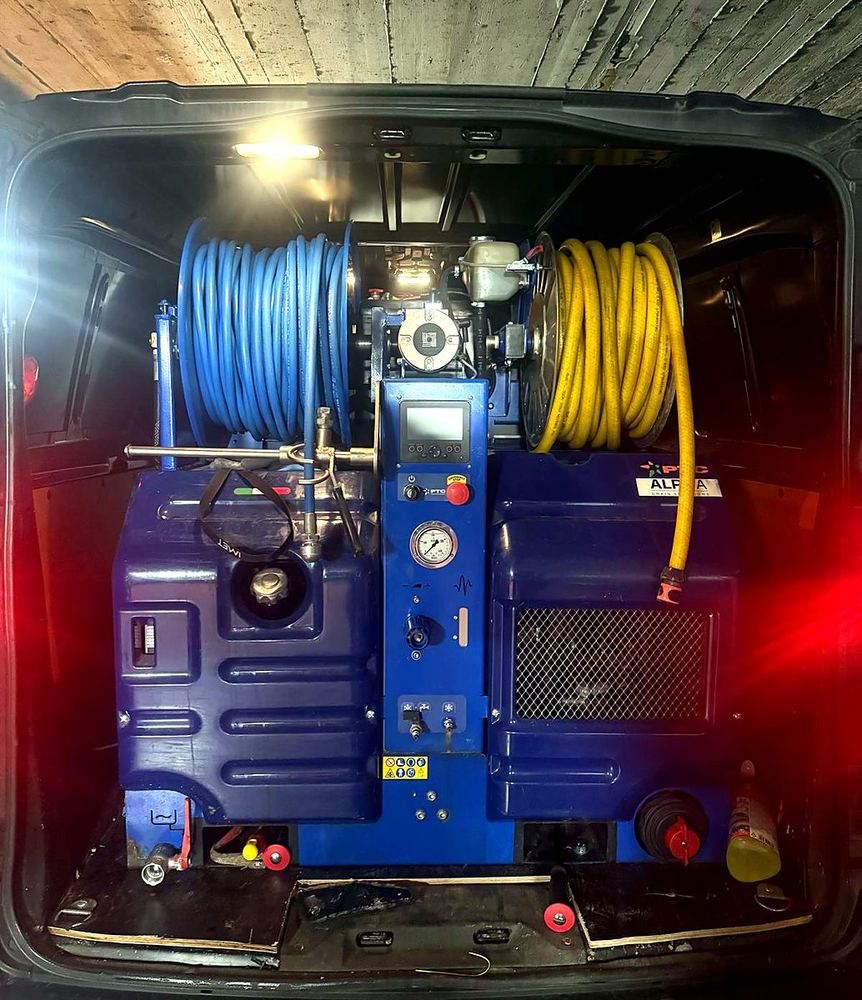
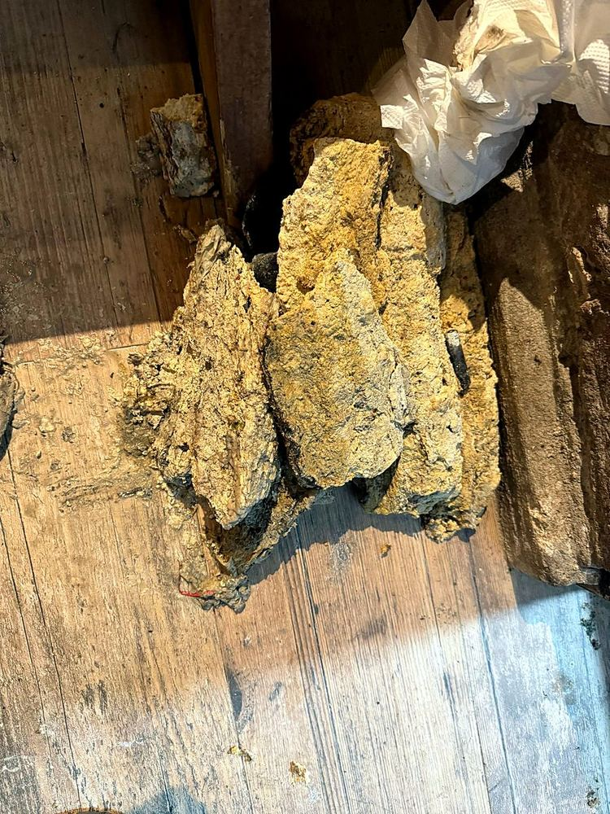
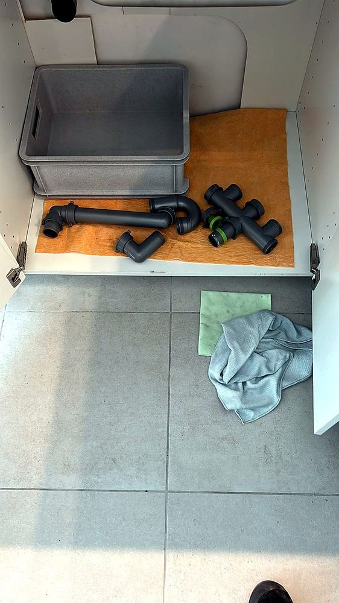
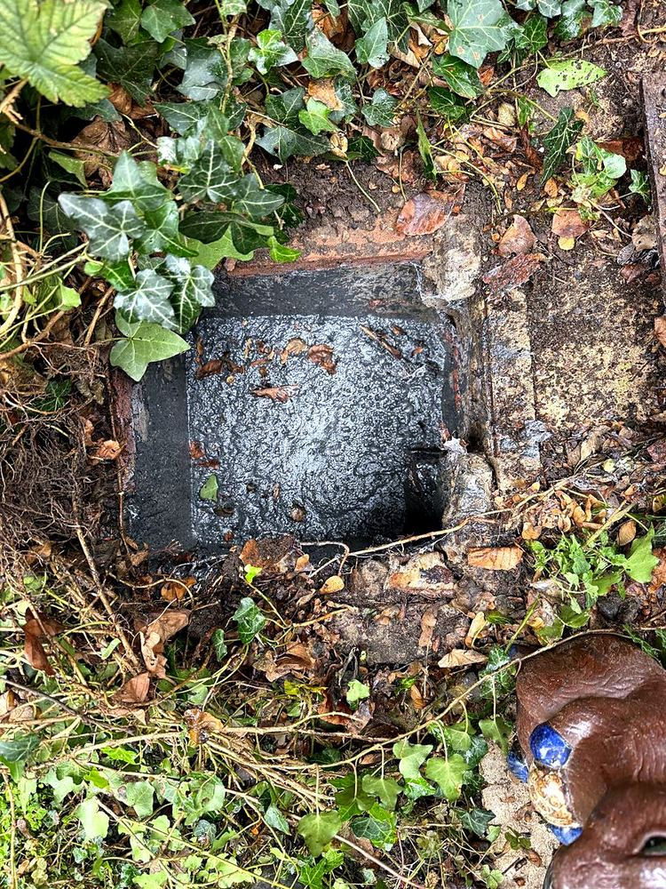

WC, gootsteen, douche of riool verstopt? Een ontstopper is bij u binnen 30 minuten in Brussel, 24 uur op 24, 7 dagen op 7. U kent de prijs voordat we beginnen.
Gratis offerte via telefoon · Vrijblijvend

Geen verrassingen: u weet wat u betaalt voordat we beginnen.
Leg ons het probleem uit. U krijgt gratis een prijsinschatting via de telefoon.
Een ontstopper is bij u binnen 30 minuten in Brussel, binnen 1 uur in de rand.
We bevestigen de prijs ter plaatse, voordat we beginnen. Daarna lossen we het probleem netjes op.
Particulieren, syndici, winkels en restaurants: wij hebben het juiste materiaal, van ontstoppingsveer tot hogedruk.
Toilet verstopt of loopt over? Wij komen dringend langs.
Meer info →Keukengootsteen, lavabo: gedaan met stilstaand water en geurtjes.
Meer info →Trage of verstopte afvoer? Wij maken de leiding vrij.
Meer info →Verstopt riool, terugstromend water, ondergelopen kelder: snelle interventie.
Meer info →Wij vinden de exacte oorzaak van de verstopping of de breuk.
Meer info →Grondige reiniging zodat het niet opnieuw verstopt raakt.
Meer info →Gevestigd vlak bij Brussel, zijn we snel in alle 19 gemeenten.
Gratis offerte via telefoon, prijs bevestigd ter plaatse. Geen tellertje dat loopt.
Ook in het weekend en op feestdagen. Een echte vakman neemt op.
Proper en duurzaam werk. Komt het probleem terug, dan komen wij terug.
Score van 5,0/5 op Google.
« Nous avions un problème de WC bouché, avec une évacuation d’eau totalement impossible. Le technicien est intervenu rapidement et a trouvé la solution avec beaucoup de compétence. »
« Problème de WC bouché, impossible de faire évacuer l’eau. Le technicien a trouvé la solution rapidement. Très sympathique et surtout très compétent. »
« J’avais un gros problème d’égout bouché, avec de mauvaises odeurs et de l’eau qui remontait. Très satisfait du service ! »
Geen stockfoto's: dit zijn onze echte interventies in Brussel en omgeving.








Wij komen in alle 19 gemeenten van het Brussels Hoofdstedelijk Gewest.
Rand rond Brussel (Wemmel, Meise, Grimbergen, Dilbeek, Zaventem…): ter plaatse binnen 1 uur.
De prijs hangt af van het soort verstopping en het nodige materiaal (ontstoppingsveer, hogedruk, camera). Bel ons: u krijgt gratis een inschatting via de telefoon en de prijs wordt ter plaatse bevestigd voordat we beginnen.
Binnen 30 minuten in Brussel en binnen 1 uur in de rand.
Ja. Wij zijn 24/7 bereikbaar, ook in het weekend en op feestdagen.
Ons werk is gegarandeerd: tevreden of we komen terug. Komt de verstopping terug, bel ons.
Ja, wij ontstoppen ook gemeenschappelijke afvoeren, professionele keukens en industriële installaties.
Wacht niet tot het water overloopt. Een ontstopper neemt meteen op.
0494 34 60 19Laat uw nummer achter, wij bellen u snel terug.